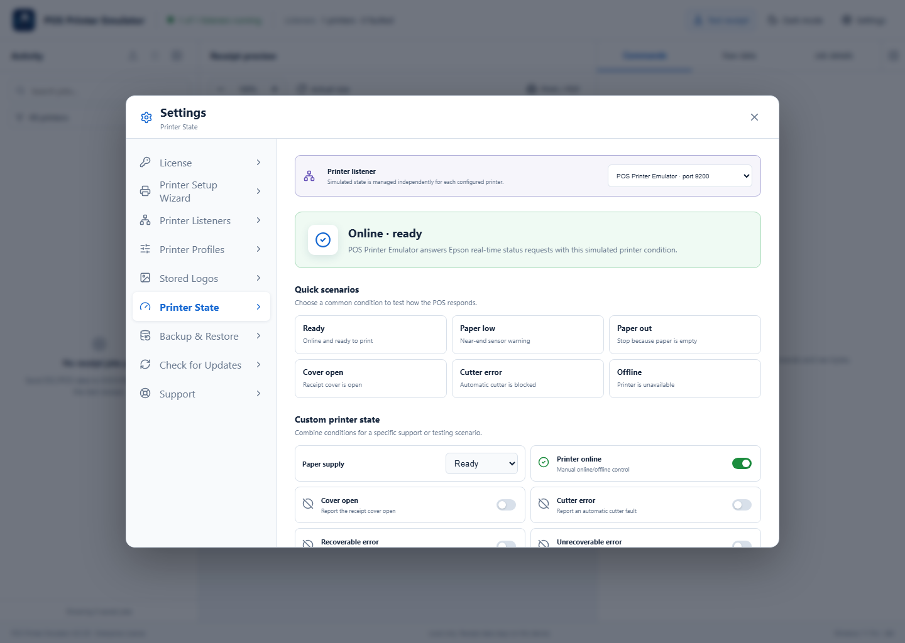
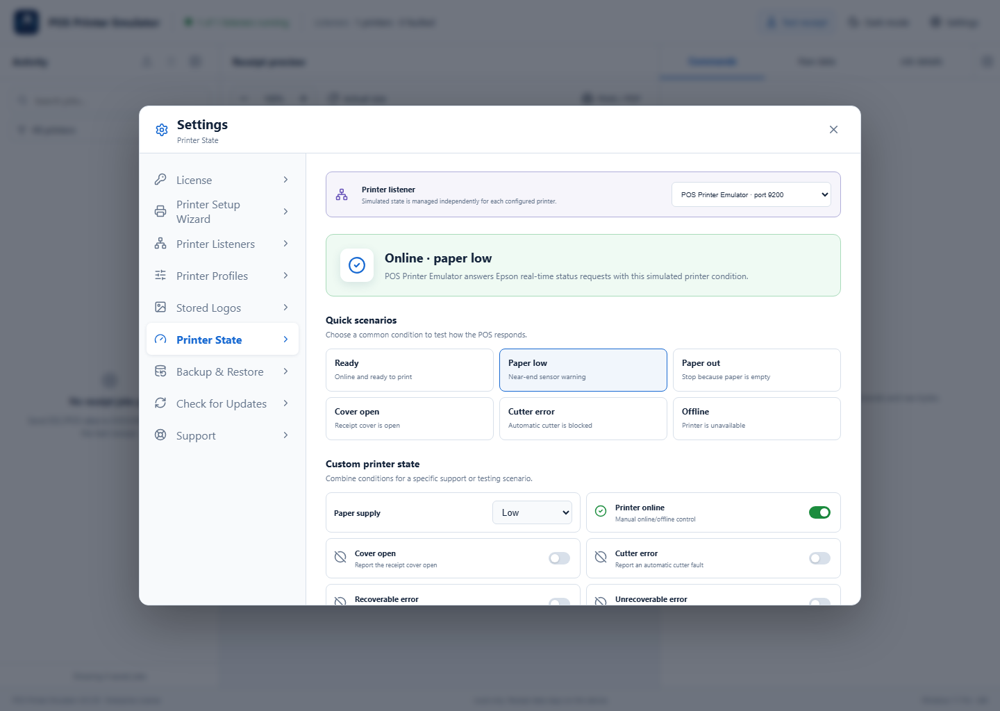
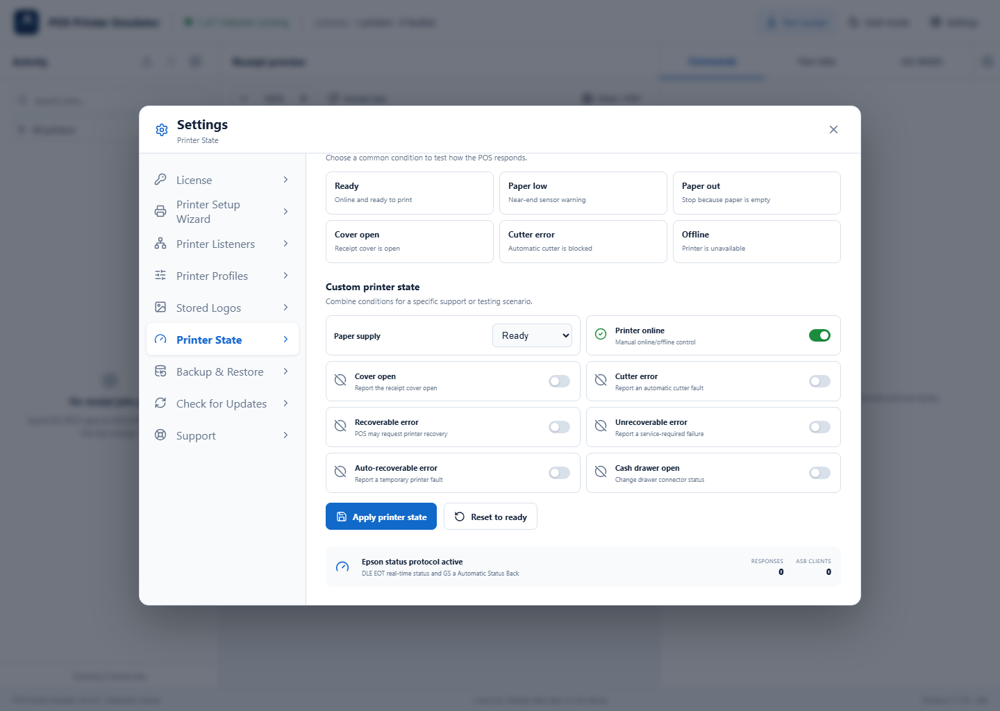

Available with Lite, Pro, and Enterprise. POS Printer Emulator answers Epson DLE EOT real-time status and Automatic Status Back requests with the selected simulated condition.
1Select the printer to test
Open Settings → Printer State. Pro and Enterprise installations with multiple listeners can select a printer at the top. Every listener keeps its simulated state independently.

2Apply a quick scenario or custom state
Select Paper low, Paper out, Cover open, Cutter error, or Offline for common tests. For advanced testing, combine paper supply, online state, cover, cutter, recoverable or unrecoverable errors, auto-recoverable errors, and cash-drawer state, then select Apply printer state.

3Return the printer to normal
When testing is complete, select Reset to ready. Verify the summary says the printer is online and ready before returning the POS to normal operation.

Testing tips
- Change one state at a time when documenting POS behavior.
- Record whether the POS blocks printing, retries, or displays a warning.
- Use Connection Diagnostics if the POS does not receive any Epson status response.